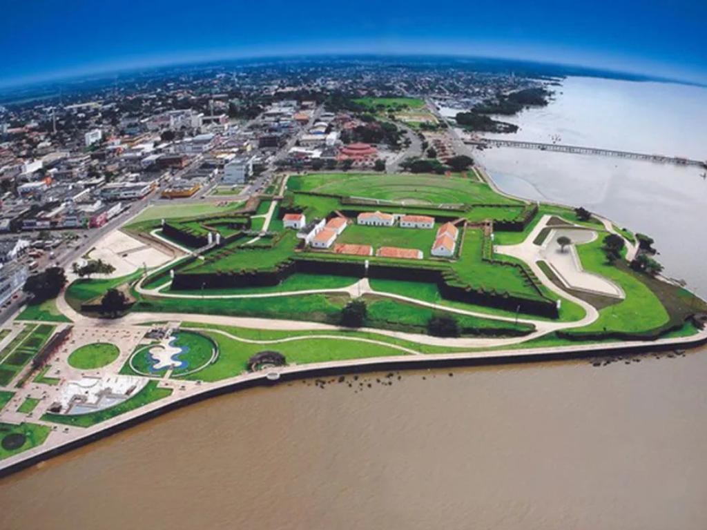

O Amapá é um estado localizado no extremo Norte do Brasil, fazendo fronteira com a Guiana Francesa e banhado pelo Oceano Atlântico. Sua capital, Macapá, é conhecida por abrigar a Fortaleza de São José de Macapá e pela passagem da Linha do Equador em seu território. O estado possui grande parte de sua área coberta pela Floresta Amazônica, apresentando rica biodiversidade e importantes áreas de preservação ambiental. A economia do Amapá baseia-se no extrativismo, na mineração, na pesca e no comércio, além de possuir forte influência das culturas indígena, africana e ribeirinha em suas tradições e festividades.

Voltar